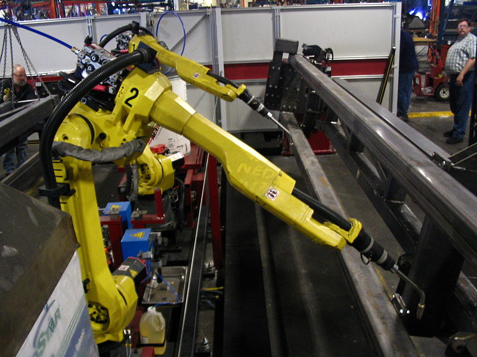
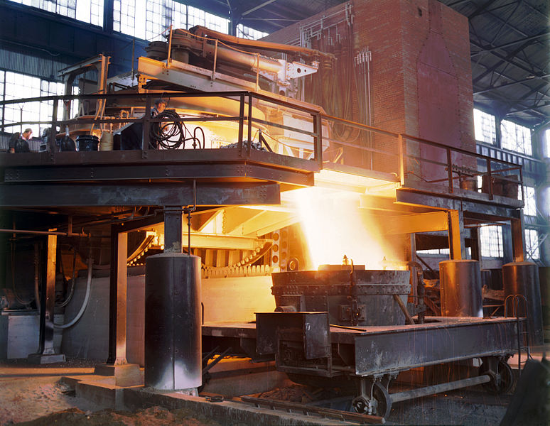
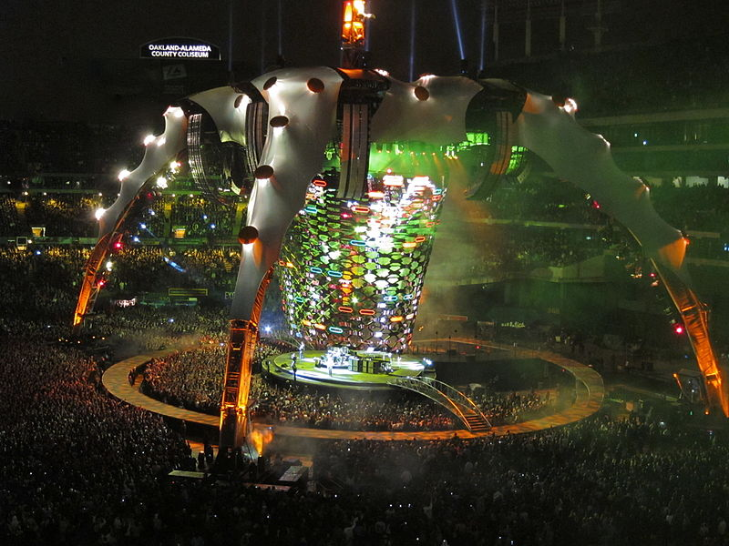

What Economies Do
2 Resource maintenance

- Management of capital stocks so that their productivity is sustained
3 Natural Capital

4 Manufactured Capital

5 Human Capital

7 Financial Capital
- Funds of purchasing power that facilitate economic growth
8 Investment
- Actions taken now for benefits in the future
9 Production of goods and services

10 Production

- Conversion of resources to goods and services
13 Waste Products

14 Distribution of goods and services
15 Exchange

16 Transfer

- The giving of something with nothing specific expected in return
17 Consumption of goods and services
19 Discussion
- Think of some activity you enjoy. What natural, manufactured, human, and social capital does it employ?
